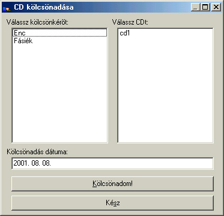

CD kölcsönadása
Alapértelmezett
ikonja: |
 |
| Pillanatkép: |
 |
Itt adhatod kölcsön a CD-idet, elõször válassz egy kölcsönkérot a baloldali listából, majd egy
CD-t a jobboldaliból. Végül kattints a "Kölcsönadom!" gombra, hogy érvényesítsd akaratod.
A lista csak a nem kölcsönadott CD-ket jeleníti meg!
A kész gombra kattintva bezárhatod az ablakot.
Ha egy CD 1 hónapnál régebben lett kölcsönadva, akkor a program az induláskor figyelmeztet(het).